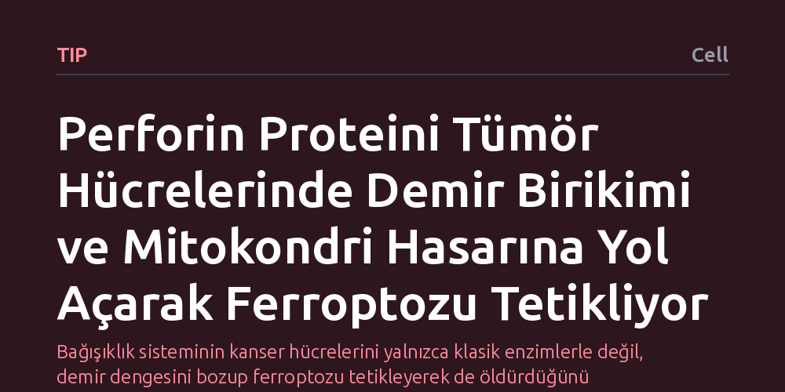

TIP · Cell · 2026-10-24
Bağışıklık hücrelerinin salgıladığı perforin proteininin tümör hücrelerini yalnızca enzim aktararak değil, demir alımını artırıp mitokondri hasarıyla ferroptozu tetikleyerek doğrudan öldürdüğü keşfedildi. Bulgular, bağışıklık kontrol noktası tedavisine yanıtı öngörmede ve demir takviyesiyle tümörle mücadeleyi güçlendirmede yeni bir yol sunuyor.
Bağışıklık sisteminin kanser hücrelerini yalnızca klasik enzimlerle değil, demir dengesini bozup ferroptozu tetikleyerek de öldürdüğünü göstererek immünoterapide demir desteği gibi yeni tedavi yaklaşımlarının önünü açıyor.

Vücudumuzun savunma ordusundaki sitotoksik T hücreleri ve doğal katil hücreler, kanserli hücreleri tespit edip ortadan kaldırmakla görevlidir. Yıllardır bu hücrelerin temel çalışma prensibinin tek bir ana senaryoya dayandığı düşünülüyordu: Bağışıklık hücreleri önce perforin adlı proteini salgılar, perforin hedef tümör hücresinin zarında gözenekler açar ve bu deliklerden granzim adı verilen öldürücü enzimler içeri sızarak hücreyi yok eder. Bu klasik modelde perforin, yalnızca kapıyı açan pasif bir anahtar veya taşıyıcı gibi görülüyordu.
Ancak kanser tedavisinde kullanılan immünoterapiler bazı hastalarda çok iyi sonuç verirken bazılarında neden etkisiz kalıyordu? Bu sorunun peşine düşen araştırmacılar, bağışıklık sisteminin tümörleri yok etme mekanizmasında bugüne kadar gözden kaçmış bağımsız bir yol olup olmadığını sorguladı. Perforinin sadece bir kapı açıcı mı olduğu, yoksa başlı başına ölümcül bir darbe vurup vurmadığı sorusu bu çalışmanın çıkış noktasını oluşturdu.
Araştırmacılar, perforin proteininin klasik granzim enzimlerinden bağımsız bir işlevinin olup olmadığını anlamak için hücresel ve moleküler düzeyde kapsamlı laboratuvar deneyleri kurguladı. Hücre kültürlerinde granzim bulunmayan ortamlarda perforinin tümör hücreleri üzerindeki etkileri adım adım izlendi. Hücre zarı geçirgenliği, mineral taşınımı ve hücre içi organellerin tepkileri gelişmiş biyokimyasal yöntemlerle kaydedildi.
Bunun yanı sıra elde edilen laboratuvar bulgularının insanlardaki karşılığını görmek amacıyla bağışıklık kontrol noktası blokajı tedavisi gören kanser hastalarının klinik verileri incelendi. Hastaların tümör dokularındaki moleküler işaretler ile tedaviye verdikleri yanıtlar karşılaştırılarak, hücresel düzeyde keşfedilen bu yeni mekanizmanın klinik pratikte bir karşılığı olup olmadığı test edildi.
Elde edilen bulgular, perforinin sanılandan çok daha aktif ve ölümcül bir role sahip olduğunu ortaya koydu. Perforin, hücre zarında delik açmanın ötesine geçerek tümör hücresinin içine yoğun bir demir akışını tetikliyor. Hücre içine dolan bu kontrolsüz demir, enerji santralleri olan mitokondrilerde aşırı demir yüklenmesine yol açarak mitokondriyal hasara neden oluyor.
Mitokondrinin hasar görmesi ve demir fazlalığı, hücreyi 'ferroptoz' adı verilen özel bir hücre ölümü türüne sürüklüyor. Bu ölüm biçimi, klasik programlı intihardan farklı olarak demire bağlı yoğun yağ peroksidasyonuyla hücrenin yapısal olarak parçalanmasını sağlıyor. Kısacası perforin, yanındaki enzimlere hiç ihtiyaç duymadan, tek başına tümör hücresini demir zehirlenmesine benzer bir mekanizmayla içeriden imha edebiliyor.
Bu keşif, sitotoksik bağışıklık ile hücresel demir metabolizması arasında daha önce bilinmeyen doğrudan bir bağ kuruyor. Klinik analizler, perforine bağlı bu demir-ferroptoz yolunun aktif olduğu hastaların bağışıklık kontrol noktası tedavilerine çok daha iyi yanıt verdiğini gösteriyor. Bu durum, hastaların tedaviye yanıt verip vermeyeceğini önceden tahmin edebilmek için yeni bir biyolojik gösterge sunuyor.
Daha da önemlisi bu bulgu, gelecekteki kanser tedavileri için uygulanabilir bir stratejiye işaret ediyor: Bağışıklık sistemini desteklemek amacıyla demir takviyesi veya ferroptozu tetikleyen ajanlar kullanmak, tümörle mücadeleyi belirgin şekilde güçlendirebilir. Elbette bu yaklaşımın klinik olarak güvenli ve etkili bir tedavi protokolüne dönüşmesi için insan deneklerle yapılacak kapsamlı kontrollü klinik araştırmalara ihtiyaç bulunuyor.